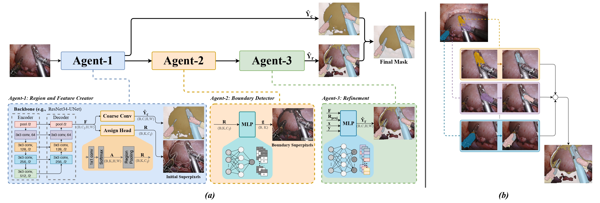

Abstract
Superpixel-based segmentation offers an efficient alternative to dense pixel-wise segmentation by grouping visually coherent pixels into compact regions. However, this efficiency often comes at the cost of boundary precision, especially around thin structures, small objects, and complex semantic transitions.
We introduce Boundary-Responsive Differentiable Gating, BRDG, a segmentation framework that learns to identify boundary-sensitive regions and selectively activates high-fidelity refinement where it is most needed. Instead of applying expensive dense refinement uniformly across the image, BRDG focuses computation on ambiguous boundary areas while maintaining efficient superpixel-based reasoning elsewhere.
Method Overview
1. Superpixel Representation
The image is decomposed into compact superpixel regions, reducing the segmentation search space and improving computational efficiency.
2. Boundary-Aware Gating
BRDG predicts differentiable gates that estimate where semantic boundaries are uncertain and require high-resolution refinement.
3. Selective Refinement
The model applies detailed refinement only to boundary-sensitive areas, preserving both segmentation accuracy and efficiency.

Overview of the BRDG pipeline. Replace this image with your final method figure.
Why BRDG?
Standard superpixel-based segmentation is efficient, but it can smooth or misclassify pixels around object boundaries. BRDG introduces a boundary-responsive gating mechanism that learns where the model should preserve region-level efficiency and where it should perform finer boundary-aware refinement.
Model Variants and Backbones
BRDG supports multiple model variants to balance speed, memory usage, and segmentation quality.
| Variant | Backbone | Input Size | Use Case | Weights | Config |
|---|---|---|---|---|---|
| BRDG-Tiny | SegFormer-B0 | 512 × 512 | Fast inference and ablation studies | Download | YAML |
| BRDG-Base | SegFormer-B2 | 512 × 512 | Balanced accuracy and efficiency | Download | YAML |
| BRDG-Large | SegFormer-B5 | 512 × 512 | Best segmentation quality | Download | YAML |
| BRDG-Mobile | MobileNet / EfficientNet | 512 × 512 | Lightweight deployment | Download | YAML |
Results
Add your quantitative results here once the final experiments are ready. You can report mIoU, Dice, Boundary F1, inference speed, parameters, and FLOPs.
| Method | Backbone | mIoU ↑ | Dice ↑ | Boundary F1 ↑ | Params ↓ |
|---|---|---|---|---|---|
| Baseline Superpixel Segmentation | SegFormer-B0 | TBD | TBD | TBD | TBD |
| BRDG-Tiny | SegFormer-B0 | TBD | TBD | TBD | TBD |
| BRDG-Base | SegFormer-B2 | TBD | TBD | TBD | TBD |
| BRDG-Large | SegFormer-B5 | TBD | TBD | TBD | TBD |
Qualitative Results

Replace this figure with qualitative examples showing image, ground truth, baseline prediction, BRDG prediction, and boundary error map.
Installation
git clone https://github.com/fatma936-sudo/BRDG.git
cd BRDG
conda create -n brdg python=3.10 -y
conda activate brdg
pip install -r requirements.txtInference
python scripts/infer_image.py \
--image examples/sample_images/example.png \
--config configs/brdg_base_segformer_b2.yaml \
--checkpoint weights/brdg_base_segformer_b2.pth \
--output outputs/example_prediction.pngTraining
python scripts/train.py \
--config configs/brdg_base_segformer_b2.yaml \
--data-root /path/to/dataset \
--save-dir checkpoints/brdg_baseWeights
Pretrained BRDG checkpoints will be released through Hugging Face and GitHub Releases.
Poster and Video
Citation
If you use BRDG in your work, please cite:
@inproceedings{ahmed2026brdg,
title = {Boundary-Responsive Differentiable Gating for Superpixel-Based Segmentation},
author = {Ahmed, Fatma and Author, Second and Author, Third and Author, Fourth},
booktitle = {Proceedings of the IEEE/CVF Conference on Computer Vision and Pattern Recognition},
year = {2026}
}Contact
For questions, please open an issue on the GitHub repository or contact the authors.